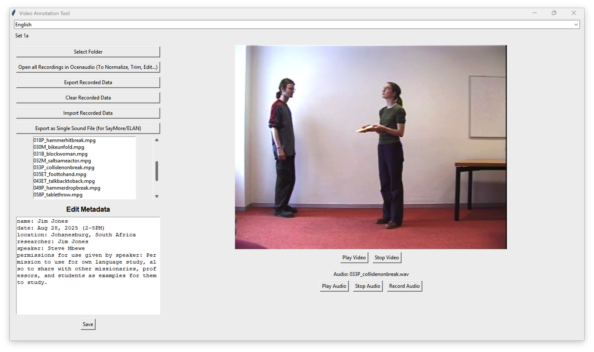

Video Annotation Tool
Free • Open Source
Download checking…
Get the latest version for your computer. No coding or setup required.
If these buttons don’t start a download, open the latest releases page and pick your file there.
What it does
- Play videos and record native speaker descriptions of each.
- Keep simple project info in a built‑in metadata editor.
- Export all your recordings (and metadata) in one step.
- Open recordings in Ocenaudio for trimming, normalizing, and fine‑tuning.
- Combine all WAV files into a single audio file with subtle click markers between items.
- Choose your language for the interface.
Screenshot

Quick start
- Prepare a folder with your video files (MP4, MOV, AVI, MKV, etc.).
- Open the app and click “Select Folder”. Pick your video folder.
- Select a video from the list to preview the first frame.
- Press “Record Audio” to capture your native-speaker description; press again to stop and save. The app saves a WAV with the same name as the video.
- Use “Export Recorded Data” to copy all WAVs and metadata.txt to a folder of your choice.
Install on Windows
- Download the .exe above.
- Double‑click to run. If SmartScreen appears, choose “More info” → “Run anyway”.
- No separate install is required.
Install on macOS
- Download the .dmg above and open it.
- Drag “Video Annotation Tool.app” into Applications.
- On first launch, you may need to allow it in System Settings → Privacy & Security.
Working in a project
- Folder display: The app shows the current project folder at the top; hover to see the full path.
- Video preview & playback: Pick a video to preview the first frame and play/stop as needed.
- Audio notes: Record a short WAV per video. If a file exists, the app will ask before overwriting.
- Metadata: Edit project info in the side panel; it’s saved to
metadata.txtin your folder. - Open in Ocenaudio: Launch all WAVs in Ocenaudio for further editing.
- Export / Import: Export all WAVs + metadata, or import WAVs that match your video names.
- Join WAVs: Make a single WAV of all items, with subtle click separators between each clip.
- Languages: Use the top dropdown to switch the interface language.
Troubleshooting
- Microphone access: If recording is silent or fails, check your OS microphone permissions for the app.
- macOS cannot open the app: Right‑click the app → Open, or allow it in Privacy & Security and try again.
- No videos listed: Confirm the folder contains supported video files (e.g., .mp4, .mov).
- Need help? Visit the issue tracker.